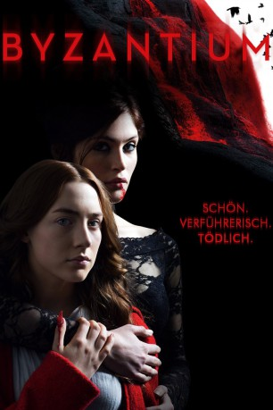
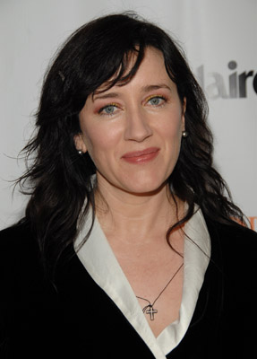

#5073 Byzantium
 
 IMDB-Wertung: 6.5 / 10
IMDB-Wertung: 6.5 / 10  Metascore: 0
Metascore: 0 
Sie kaufen sich ihre Lebenszeit, und ihre Währung ist Blut. Aber nicht ihr Blut, sondern das ihrer Opfer. Denn Clara (Gemma Arterton) und Eleanor Webb (Saoirse Ronan) sind Vampire, genauer Mutter und Tochter. Seit rund 200 Jahren lebt Clara ihr düsteres Geheimnis der Untoten, die das Blut der Lebenden braucht, und teilt es mit Clara, die es für sich behalten muss. Immer in Gefahr entdeckt zu werden, ziehen die Beiden durchs Land. In einem heruntergekommenen Küstenort haben sie vorerst Zuflucht gefunden, ein verlassenes Gästehaus, das Byzantium, dient ihnen als Herberge. Während Clara ihrem blutigen Gewerbe nachgeht, verliebt sich Eleonor in den jungen Frank (Caleb Landry Jones) und verrät ihm schließlich ihr Geheimnis. Das hat Konsequenzen, denn die dunklen Schatten der Vergangenheit haben ihre Spuren ebenso aufgenommen wie die Polizei (in Form von Sam Riley)…
Jahr: 2012
Dauer: 118 Minuten
FSK: 16
Land: England Studio: UFATonspuren: DTS - ,
Untertitel:
Auflösung: 1080p (1920x816) Größe: 7833 MB
Genre: Thriller, Horror, Drama, Fantasy
Regisseur: Neil Jordan
Drehbuch: Mary Higgins Clark
Soundtrack:
Darsteller:
 Saoirse Ronan als Eleanor
Saoirse Ronan als Eleanor Gemma Arterton als Clara
Gemma Arterton als Clara- Warren Brown als Gareth
- Ruby Snape als Wendy
 Thure Lindhardt als Werner
Thure Lindhardt als Werner- Edyta Budnik als Nadia
- Gabriela Marcinková als Anya
 Caleb Landry Jones als Frank
Caleb Landry Jones als Frank Daniel Mays als Noel
Daniel Mays als Noel- Uri Gavriel als Savella
 Sam Riley als Darvell
Sam Riley als Darvell Jonny Lee Miller als Ruthven
Jonny Lee Miller als Ruthven- Christine Marzano als Mrs. Strange
 Kate Ashfield als Gabi
Kate Ashfield als Gabi-  Maria Doyle Kennedy als Morag
 Tom Hollander als Kevin Minton , uncredited
Tom Hollander als Kevin Minton , uncredited- Barry Cassin als Robert Fowlds
- David Heap als Lap Dancing Client
- Jenny Kavanagh als Barmaid
- Glenn Doherty als Steve
- Caroline Johns als Young Clara
- Jeff Mash als Mark
- Ronnie Masterson als Old Lady in Hospital
- Patricia Loveland als Old Lady in Hotel
- Sean Folan als (uncredited
- Christophe Philipps als PC Reading , uncredited
- Peter Stacey als Passer By , uncredited
Datei: X:\2012(A-F)\Byzantium (2012, FSK16, 1920x816).mkv seit 23.12.2016
Festplatte: HD 2012(A-M)
 Es gibt insgesamt 102 Filme in der Gruppe '2012(A-F)'
Es gibt insgesamt 102 Filme in der Gruppe '2012(A-F)'